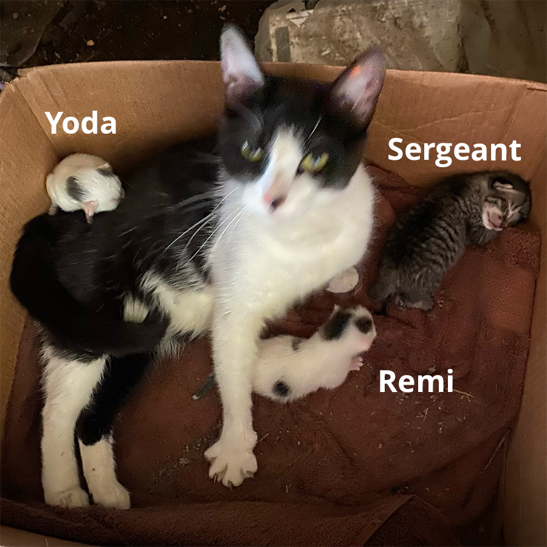
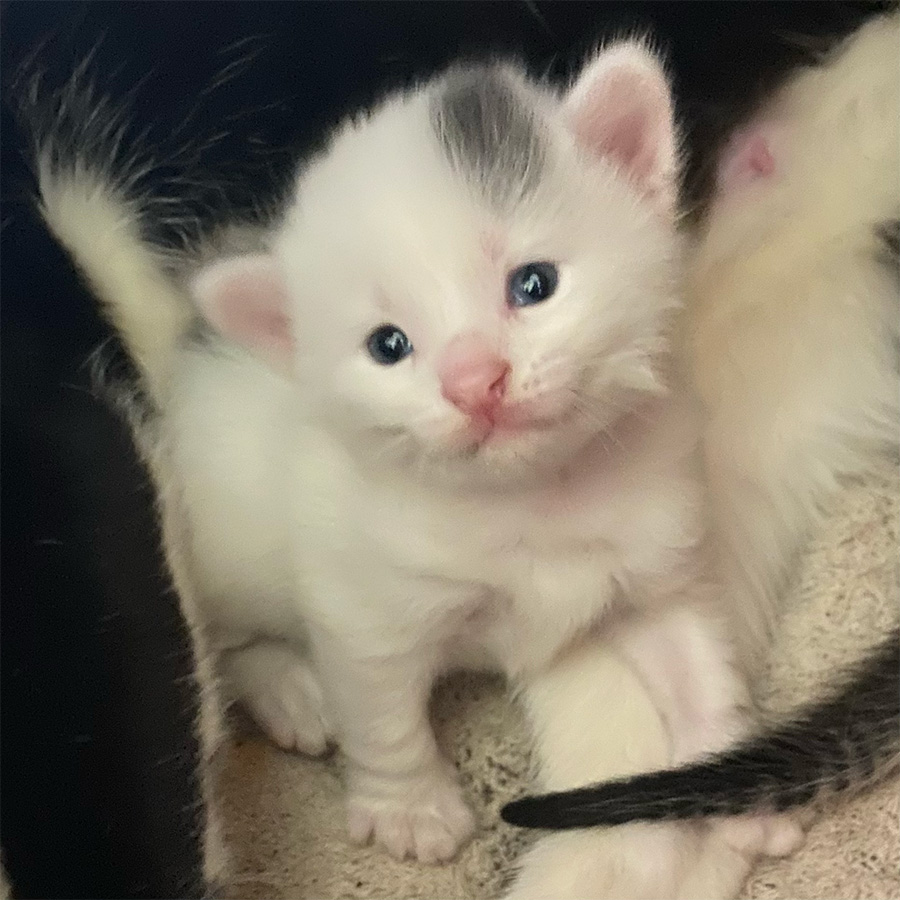
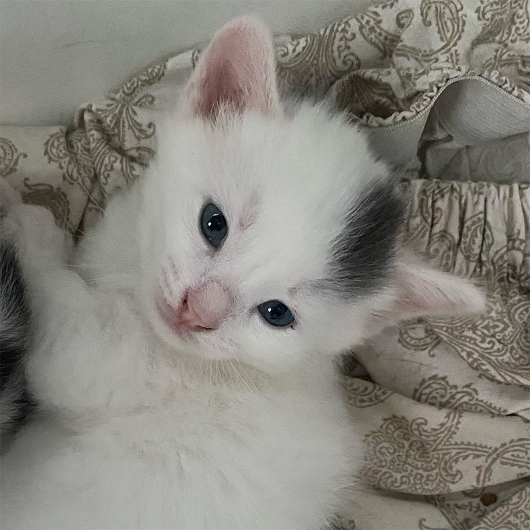
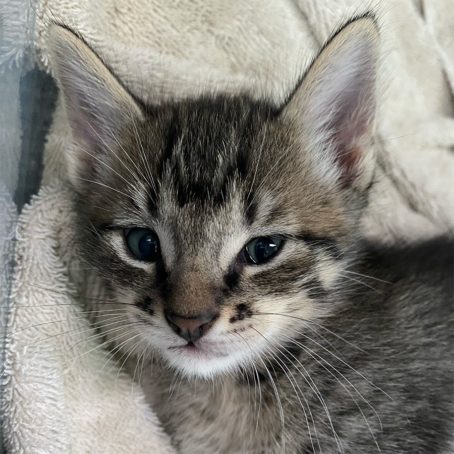
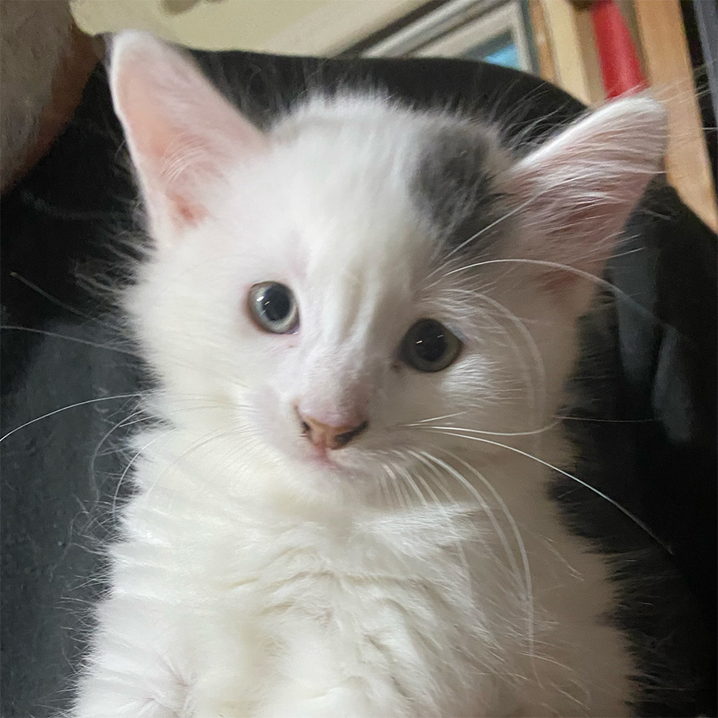
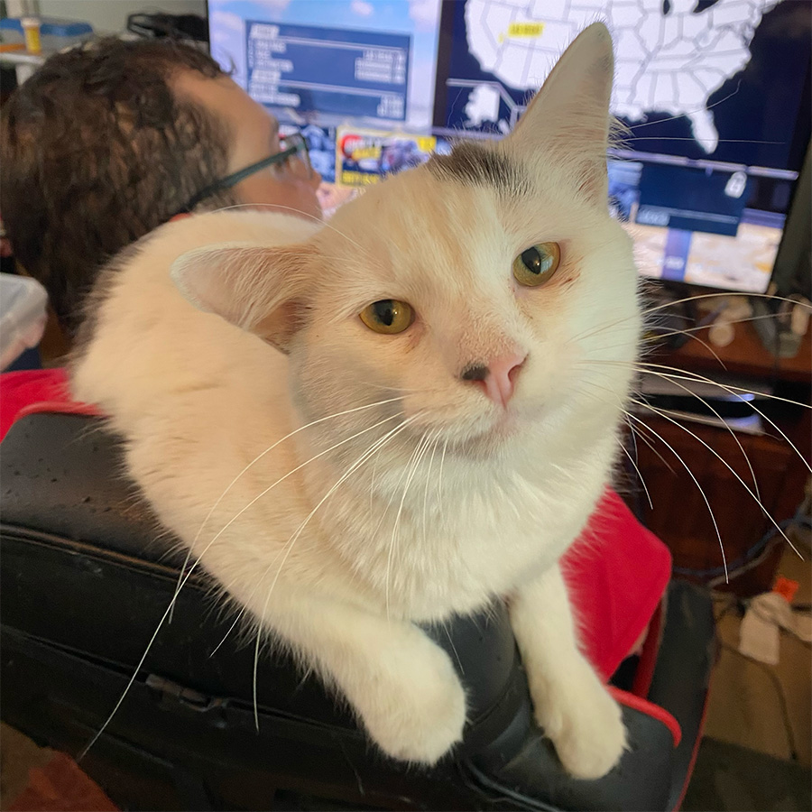

The Life and Times of Yoda
Yoda was born on June 21, to a stray kitty we called Mama Kitty. She showed up at our house pregnant. She was sweet, and we tried to find her humans, but no one came forward. Mama Kitty had 3 kittens:
- Yoda
- Sergeant
- Remi

We are going to follow Yoda as he grows as from kitten into an adult.
Kitten Development
Kittens are born with their eyes closed and ears folded. Their limbs are weak and they move by crawling.
When their eyes open, they are blue. As they age, their legs get stronger and they wobble when they walk.

As a kitten matures their ears grow, At this point, Yoda earned his name because his ears stuck out to the side instead of up like his brother Sergeant's


A couple weeks go by and a kitten's ears continue to grow and eyes will start to change to the color that they will be when they are an adult. Yoda's right ear starts to droop.

By this time, kittens are weaned and ready for a new home. They are very playful and develop a personality. Kittens may develop a bond with a single human. Yoda chose Eli as his human and would play around him and sit on his shoulder

As kittens grow into adulthood their eyes become their final color and appear to be full-size by six months. However, they will continue to grow, put on weight, and fill out.
For more information on kitten development visit Kitten Progression At a Glance.